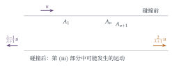

STEP II 1990，第 14 题
继续之前，请先阅读题目（原题为英文）。题目载于 STEP Support Programme 的题目资料库： step.maths.org/questions/90-s2-q14
引子
把牛顿摆（Newton’s cradle）的一个球拉开，然后放手：另一端会有一个球飞出。拉开两个，就有两个飞出。为甚么？为甚么不是一个球以两倍速率飞出，或者三个球以三分之二的速率飞出？这两种情况的动量同样正确。
答案要从力学的两大守恒定律（conservation laws）说起。动量（momentum）与能量（energy）合起来所施加的限制，远比其中任何一个单独施加的严格得多，你想像得到的结果大多会被它们排除。本题把这两条定律用作约束条件（constraints）：不是用来计算会发生甚么，而是用来判断甚么可以发生。把守恒定律看成每一个可能结果都必须遵守的规则，这种想法贯穿整个物理学。
动笔之前
一粒质量为 \(m\) 的弹珠以速率 \(u\) 运动，撞上一粒质量为 \(M\) 的静止弹珠，而动能（kinetic energy）守恒。碰撞后两者的速度是多少？若 \(M = m\) 又如何？
设碰撞后的速度为 \(p\) 和 \(q\)。由动量得 \(mp + Mq = mu\)，由能量得 \(mp^2 + Mq^2 = mu^2\)。把这两式写成 \(m(u - p) = Mq\) 和 \(m(u - p)(u + p) = Mq^2\)，然后相除，得 \(u + p = q\)。于是 \[p = \frac{m - M}{m + M}\,u, \qquad q = \frac{2m}{m + M}\,u.\] 当 \(M = m\) 时，第一粒弹珠停下，第二粒以速率 \(u\) 离开：两者只是交换了速度。这就是质量相等的弹珠能把运动沿着队列传递下去的原因。
逐步解题
阶段 1 只有最后两粒运动
假设碰撞后只有 \(A_n\)（速度 \(p\)）和 \(A_{n+1}\)（速度 \(q\)）运动。写出守恒定律。哪一粒弹珠的运动限制了 \(p\) 的正负号？
由动量和能量得 \[mp + \lambda mq = mu, \qquad \tfrac12mp^2 + \tfrac12\lambda mq^2 = \tfrac12mu^2.\] 这正是质量为 \(m\) 的弹珠撞上质量为 \(\lambda m\) 的弹珠时的方程，所以（除了 \(p = u\)、\(q = 0\) 这个解之外，而该解需要 \(A_n\) 穿过 \(A_{n+1}\)） \[p = \frac{1 - \lambda}{1 + \lambda}\,u, \qquad q = \frac{2}{1 + \lambda}\,u.\] 若 \(\lambda < 1\)，两者皆为正，且 \(p < q\)：\(A_n\) 跟在 \(A_{n+1}\) 后面，但走得较慢，所以两者分开，一切并无矛盾。若 \(\lambda > 1\)，则 \(p < 0\)：\(A_n\) 向后运动。但 \(A_{n-1}\) 静止在它的正后方，并与它接触，而 \(A_n\) 不能穿过它。所以这种运动不可能发生。■
阶段 2 三粒弹珠
现在假设只有 \(A_{n-1}\)、\(A_n\) 和 \(A_{n+1}\) 运动，速度分别为 \(a\)、\(b\)、\(c\)。已知哪些弹珠静止、哪一粒在哪一粒后面，\(a\)、\(b\)、\(c\) 必须满足甚么不等式（inequalities）？
弹珠 \(A_{n-2}\) 静止在 \(A_{n-1}\) 后面（它确实存在，因为 \(n \geq 3\)），所以 \(a \geq 0\)。而且没有弹珠可以越过前面的那一粒，所以 \(a \leq b \leq c\)。合起来就是 \(0 \leq a \leq b \leq c\)。守恒定律为 \[a + b + \lambda c = u, \qquad a^2 + b^2 + \lambda c^2 = u^2.\]
把动量方程平方，再与能量方程比较。剩下甚么？
平方后，\(u^2 = a^2 + b^2 + \lambda^2c^2 + 2ab + 2\lambda ac + 2\lambda bc\)。减去能量方程， \[0 = \lambda(\lambda - 1)c^2 + 2ab + 2\lambda c(a + b).\] 由于 \(\lambda > 1\) 且 \(a, b, c \geq 0\)，右边每一项都非负，所以每一项都等于零。特别地，\(c = 0\)，于是 \(0 \leq a \leq b \leq c\) 迫使 \(a = b = 0\)。但这样总动量就是 \(0\)，而不是 \(mu\)。矛盾：这种运动不可能发生。■
留意这个论证的结构。把动量方程平方会产生 \(2ab\) 之类的交叉项（cross terms），而能量方程却没有这些项。两者之差量度了运动有多“分散”。当 \(\lambda > 1\) 时，同一个论证可以排除只有 \(A_k, \ldots, A_{n+1}\) 以非负速度运动的任何结果，你看得出原因吗？
阶段 3 两粒可以运动的弹珠
向前运动的弹珠必须全部位于远端，而这种情况既然行不通，也许有一粒弹珠是向后运动的。哪一粒弹珠可以自由地向后运动？
只有 \(A_0\) 的后面没有任何东西。不妨试试：\(A_0\) 以速度 \(p\) 运动（可能是负数），\(A_{n+1}\) 以速度 \(q\) 运动，其余全部静止。守恒定律再次与质量为 \(m\) 和 \(\lambda m\) 的两个物体碰撞时相同，所以 \[p = -\frac{\lambda - 1}{\lambda + 1}\,u, \qquad q = \frac{2}{\lambda + 1}\,u.\] \(A_0\) 反弹，\(A_{n+1}\) 向前运动，中间的弹珠保持静止，一切并无矛盾。这就完全像是 \(A_0\) 直接撞上了 \(A_{n+1}\)，而中间那一列相等的弹珠充当了完美的信差。■

回顾
以守恒定律作为约束条件。我们从来没有仔细追踪每一次碰撞，只是问：动量、能量和几何条件容许哪些结果？
物理上的不等式十分重要。“弹珠不能互相穿过”给出了不等式 \(0 \leq a \leq b \leq c\)，而排除第 (i) 和第 (ii) 部分的，正是这些不等式，而不是守恒定律。
平方后相减。把动量的平方与能量比较，会得出一个由交叉项组成的和，而这个和必须等于零。
背后的数学
为甚么只有一个球飞出
在由相等的球组成的牛顿摆中，假设有 \(k\) 个球以速率 \(w\) 一起离开。由动量得 \(kw = u\)，由能量得 \(kw^2 = u^2\)。两式相除，得 \(w = u\) 及 \(k = 1\)。所以在离开的球一起运动的各种结果之中，只有“一个球以原来的速率离开”同时符合两条定律。两个球以一半速率离开，动量正确，但能量只有一半；一个球以两倍速率离开，则只有当它是半个球时动量才正确。
但问题并未就此解决。若有 \(n\) 个球，就有 \(n\) 个未知的速度，而守恒定律只有两条，所以同时符合两者的结果有无穷多个（试找出一个三个球以不同速率运动的结果）。实际出现哪一个，取决于各球在接触期间如何变形。1980 年代初，Frank Herrmann 和他的同事证明，我们熟悉的现象有赖于冲击沿着队列传递时不会扩散开去，而坚硬的钢球之间留有极小空隙时正是如此。若用软球，或者把球紧紧压在一起，牛顿摆的表现就没有那么干净利落；仔细的量度更显示，其他的球总会稍为移动。
守恒定律与对称
守恒定律从何而来？1918 年，诺特（Emmy Noether）证明了一条定理，它是现代物理学的基石之一：物理系统的每一种连续对称（continuous symmetry），都对应一个守恒量（conserved quantity）。如果物理定律在这里与在左边一米处相同（空间平移对称），动量就守恒。如果物理定律今天与明天相同（时间平移对称），能量就守恒。如果物理定律在每个方向都相同（旋转对称），角动量（angular momentum）就守恒。你会在大学二年级的拉格朗日力学（Lagrangian mechanics）课程中学到诺特定理（Noether’s theorem）；本章自始至终都在运用它的推论。
1668 年，英国皇家学会（Royal Society）征求物体碰撞问题的解答。沃利斯（John Wallis）处理了非弹性碰撞（inelastic collisions），而雷恩（Christopher Wren）和惠更斯（Christiaan Huygens）则各自独立地解决了弹性（elastic）的情况。惠更斯的关键洞见是转换参考系（frame）：在一艘随质心（centre of mass）运动的船上观察碰撞，这时两个相等的球只是以相反方向、原来的速率弹回，然后再变换回岸上的观点。他还注意到某一个量，即各质量乘以速率平方之和，在碰撞前后相同；不过要再过一个世纪，动能本身才被确认为一个守恒量。
思维技巧
当一个过程复杂得无法追踪时，列出不会改变的量，看看它们容许哪些结果。
物理学家正是这样推断粒子加速器中的碰撞：当中相互作用的细节并不清楚，但动量、能量和电荷必须平衡。再配合一个不等式（这里是弹珠不能互相穿过），就可以证明某个结果不可能发生。
延伸练习
同一个问题再现。试做 STEP I 2006，第 11 题：槽中有一列粒子，末端是较重的一粒。哪些最终状态是可能的？
追踪各次碰撞。把第 (iii) 部分的撞击看成一连串独立的两粒弹珠碰撞，由 \(A_0\) 撞上 \(A_1\) 开始。逐步追踪这一连串碰撞，并证明最后得到的正是第 (iii) 部分所求得的运动。
两个球撞入。在一个由五个相等的球组成的牛顿摆中，两个球同时释放，以速率 \(u\) 撞上其余三个。证明“两个球以速率 \(u\) 离开”与两条守恒定律并无矛盾，并找出另一个同样符合的结果。
末端较轻。若 \(\lambda < 1\)，追踪一连串的两粒弹珠碰撞。除了 \(A_n\) 和 \(A_{n+1}\) 之外，最后还有其他弹珠在运动吗？
延伸阅读
David Morin, Introduction to Classical Mechanics（Cambridge University Press），第 5 章。动量守恒与能量守恒，附有大量关于碰撞的习题。
Frank Herrmann & Peter Schmälzle, “Simple explanation of a well-known collision experiment”，American Journal of Physics 49 (1981)。解释牛顿摆为何行得通。
Dwight Neuenschwander, Emmy Noether’s Wonderful Theorem（Johns Hopkins University Press）。深入浅出地讲述对称与守恒之间的联系。